3D geometric processing for dimensional control with dimControl
Nataly Romaris, Olamar Benavente, Ruben Fernandez-Casal, Salvador Naya, Javier Tarrio-Saavedra
2026-10-09
Source:vignettes/dimControl.Rmd
dimControl.RmdIntroduction
dimControl provides tools for the geometric processing
of three-dimensional point clouds and triangular meshes, with particular
application to dimensional inspection.
This vignette illustrates a reproducible workflow for the processing of 3D geometric data using a reference CAD model included in the package as an example. A synthetic point cloud is first generated from the reference geometry to reproduce a simplified 3D scanning scenario. The object points are then separated from the supporting floor and used to reconstruct a triangular surface.
The reconstructed mesh is subsequently processed to identify and classify relevant geometric components according to their characteristics. Finally, the boundary of the object is extracted, cleaned, ordered, and segmented.
The workflow therefore covers:
- Simulation and preprocessing of a 3D point cloud.
- Reconstruction of a surface from a point cloud.
- Identification and classification of geometric components.
- Extraction, cleaning, and segmentation of boundaries.
library(dimControl)
## Loading required package: Rvcg
## dimControl: Tools for 3D Geometric Processing and Dimensional Analysis,
## version 0.1.1.
## Developed by the MODES-CEMI research group.
## Type `help(package = "dimControl")` for an overview
## or visit https://modes-cemi.github.io/dimControl/.The rgl
package is used for interactive 3D visualizations, while Rvcg
package provides tools for processing triangular meshes, including the
computation of face normals and barycentres.
Additionally, the legendplot
package provides complementary tools for 3D visualization, including
functions for managing the 3D display, adjusting viewpoints, and adding
legends to graphical representations.
The legendplot::new3d() function can be used to
initialize or reset the 3D display.
Reference geometry
A dimensional control workflow may include a reference geometry, such
as a theoretical CAD model, when one is available. However, a reference
CAD model is not required to use the geometric processing and
measurement tools provided by dimControl.
When available, a CAD model can provide the theoretical reference geometry for dimensional measurements and can subsequently be compared with the corresponding geometry reconstructed from the inspected object.
In this vignette, the CAD model included in dimControl
is used as an example to illustrate the workflow.
# Represent the CAD model
# Use `open3d()` or `new3d()` to open a new device
shade3d(cad, col = "lightgray")Simulating a 3D point cloud from the CAD model
In a real dimensional inspection workflow, the geometry of the inspected object can be acquired using a 3D scanning system, producing a point cloud that represents the measured surface. Depending on the acquisition conditions, the resulting point cloud may also contain points belonging to the surrounding environment.
For this reproducible example, a synthetic point cloud is generated
from the reference geometry using simulateCloud(). The
simulated data contain points representing both the object and the
supporting floor, reproducing a simplified 3D scanning scenario.
Point clouds can be very large. We have worked with point clouds containing more than 100 million points. However, a smaller point cloud is used in this example to reduce memory requirements and computational time, particularly during package checks.
set.seed(123)
cloud <- simulateCloud(mesh = cad, n = 1e5, rgen = rtnorm, mean = 0, sd = 0.2,
a = -0.5, b = 0.5, floor = list(n = 5e3, gap = 2, margin = 20))
head(cloud)
## X Y Z
## [1,] 743.45131 50.67982 -0.1079367
## [2,] 58.17573 103.12809 -0.1192354
## [3,] 366.43056 254.24224 0.1561133
## [4,] 494.15466 55.54415 -0.1174476
## [5,] 209.28973 417.40063 0.1412351
## [6,] 456.75260 27.79125 0.1263349Point cloud preprocessing
The simulated point cloud contains both object and floor points. Before surface reconstruction, the point cloud is preprocessed to isolate the points belonging to the object.
Separating object and floor points
When the object and unwanted elements of the surrounding environment
occupy different ranges along a coordinate axis, they can be separated
by analyzing the distribution of that coordinate. The
findModes() function identifies modes and valleys in this
distribution, which can be used to determine a threshold for separating
the components.
In this example, the Z coordinate is used to separate the object from the supporting floor.
modesZ <- findModes(x = cloud[, 3], bw = 0.01, q1 = 0.97)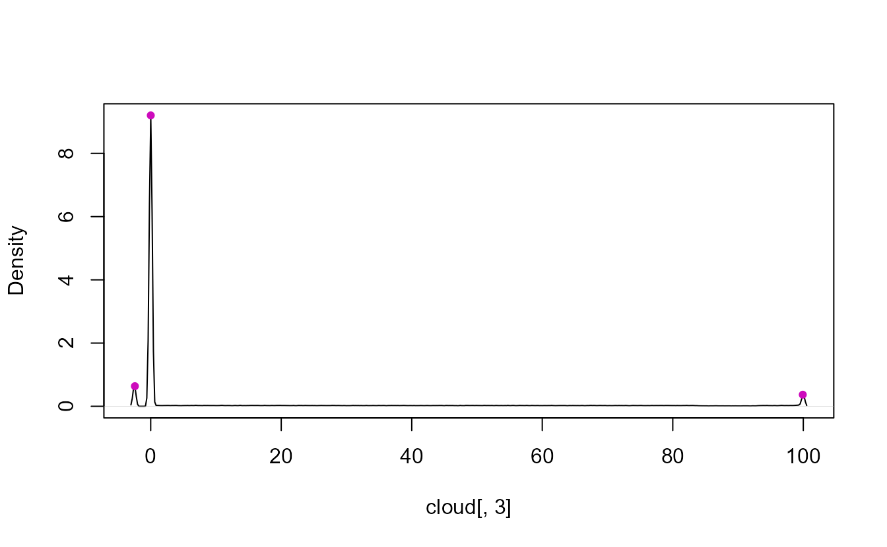
modesZ
## left mode right
## mode1 -3.029054 -2.42108463 -1.205146
## mode2 -1.407802 0.01079267 2.037357
## mode3 98.299167 99.92041839 100.528388The selected threshold is then used to classify each point as belonging to either the object or the floor.
component <- factor(cloud[, 3] > modesZ[1, "right"], levels = c(FALSE, TRUE),
labels = c("floor", "object"))
table(component)
## component
## floor object
## 5000 100000The resulting factor identifies the component associated with each
point in cloud. The segmented point cloud is represented
below, with object points shown in green and floor points in red.
# Represent the segmented point cloud with a categorical legend
fplot3d(levels(component))
points3d(cloud, lit = TRUE, col = fcolor(component), alpha = 0.1)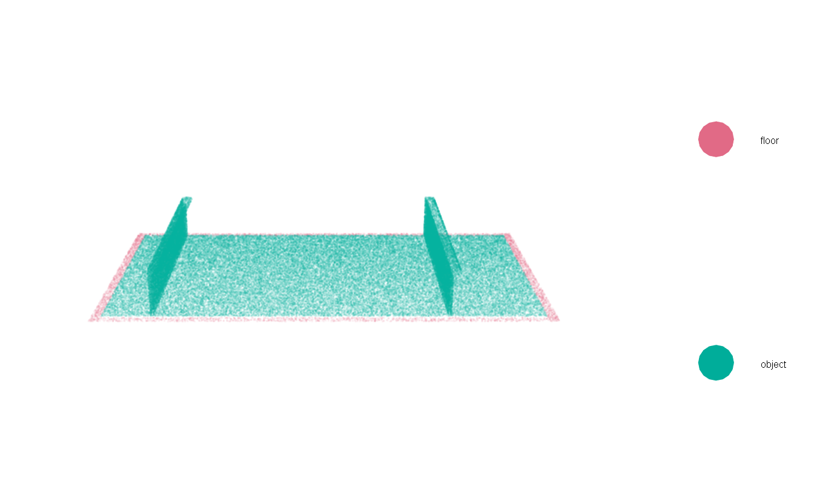
The object points are retained for the subsequent surface reconstruction.
Reconstructing the object surface
After separating the object from the supporting floor, the object
point cloud is used to reconstruct a continuous triangular surface. The
createMesh() function performs linear binning of the point
cloud and generates a isosurface using the Marching Cubes algorithm.
In this example, the reference CAD model is provided through the
cad argument. Its dimensions are used as a reference for
the spatial coverage of the reconstructed surface. In addition,
addBorder = TRUE adds zero-valued layers at the boundaries
of the binning grid in the X and Z directions. These layers facilitate
the closure of the isosurface during the Marching Cubes
reconstruction.
object <- cloud[component == "object", ]
mesh <- createMesh(cloud = object, rBin = c(8, 8, 4), lowTol = 1e-2, trunc = 3,
cad = cad, addBorder = TRUE)The resulting triangular mesh represents the reconstructed surface of the object.
# Represent the reconstructed object surface
# Use `open3d()` or `new3d()` to open a new device
shade3d(mesh, col = "lightgray")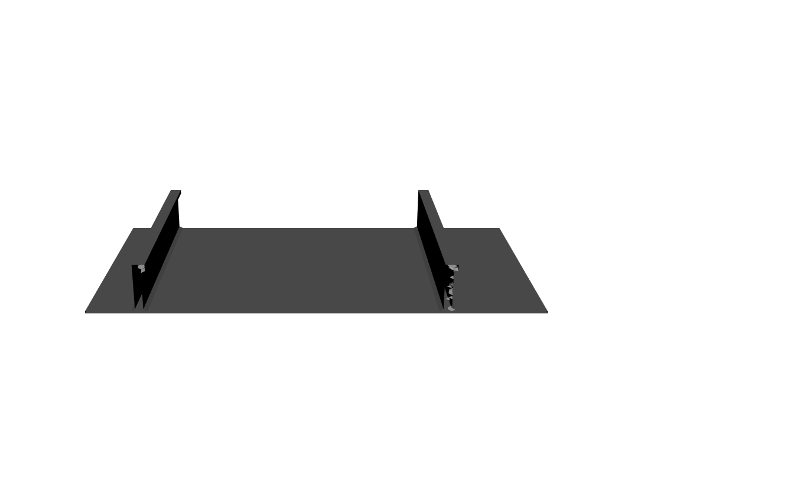
Classification of object components
The reconstructed mesh can be further processed to identify relevant geometric components according to the characteristics of the object under study. In this example, the object contains a base and several reinforcements, which are identified according to the orientation and spatial distribution of the triangular faces.
Face normals and barycentres are first computed for each triangle.
# Compute face normals and barycentres
normals <- vcgFaceNormals(mesh)
bary <- vcgBary(mesh)Identification of vertical faces
The orientation of each face relative to the X axis is characterized by the angle between its normal vector and this axis. Vertical faces are identified using an angular tolerance.
# Compute angles relative to the X axis
angleX <- angleAxis(v = normals, dim = 1, negative = TRUE)
# Angular tolerance
tolAngleX <- 60
# Identify vertical faces
isVertical <- angleX < tolAngleX | angleX > (180 - tolAngleX)The resulting classification is shown below.
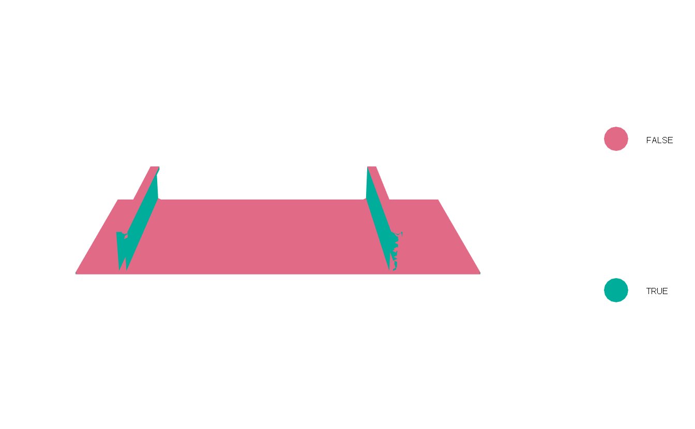
Identification of horizontal faces
The orientation of each face relative to the Z axis is characterized by the angle between its normal vector and this axis. Horizontal faces are identified using a corresponding angular tolerance.
# Compute angles relative to the Z axis
angleZ <- angleAxis(v = normals, dim = 3)
# Angular tolerance
tolAngleZ <- 40
# Identify horizontal faces
isHorizontal <- angleZ < tolAngleZThe resulting classification is shown below.
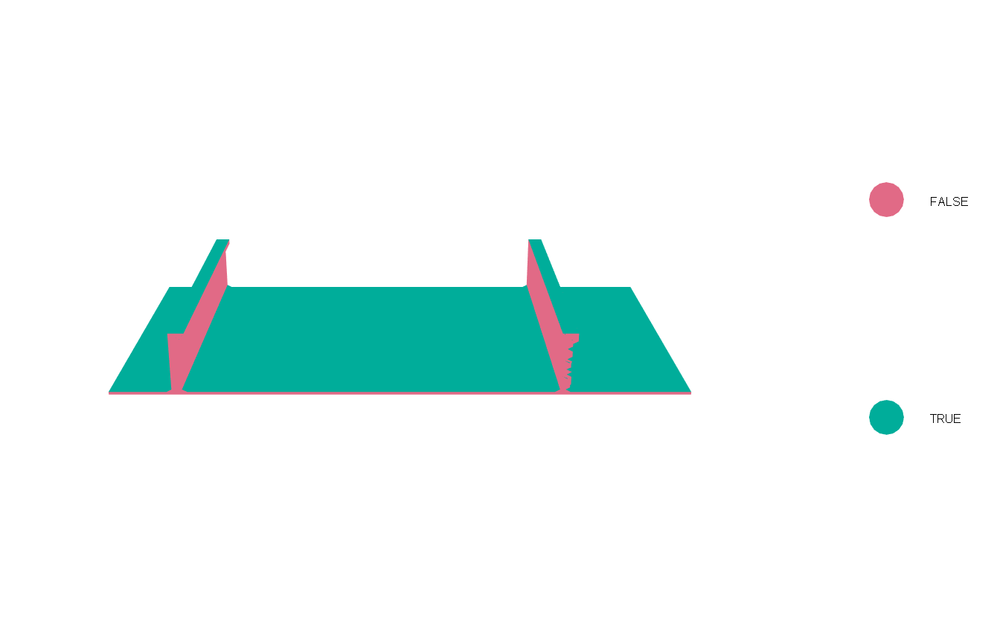
Identification of the object base
The object base is identified by selecting horizontal faces whose barycentres lie below a specified Z threshold.
# Identify faces belonging to the object base
tolZ <- 5
isBase <- isHorizontal & bary[, 3] < tolZThe faces satisfying both conditions are represented below.
Identification of reinforcements
The reinforcements are identified from the spatial distribution of the barycentres of approximately vertical faces along the X direction. The modes of this distribution define the X intervals associated with the individual reinforcements.
# Identify the X ranges associated with the reinforcements
modesX <- findModes(x = bary[isVertical, 1], bw = 8, q1 = 0.97)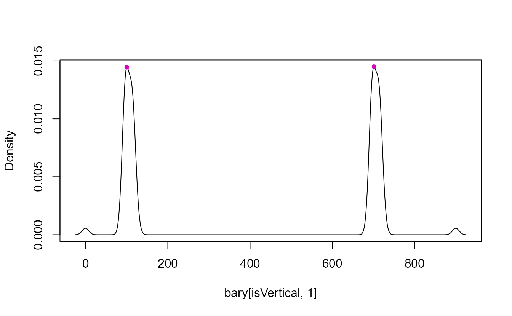
# Number of detected reinforcements
nReinforcements <- nrow(modesX)
nReinforcements
## [1] 2A separate mesh is then extracted for each reinforcement. Since the
selected triangles may form disconnected components,
splitTrianglesInd() is used to identify connected groups of
triangles. The filterMeshComponents() function is then
applied to remove small isolated components, retaining the relevant
geometry of each reinforcement.
reinforcementMesh <- vector("list", nReinforcements)
reinforcementInd <- vector("list", nReinforcements)
for (i in seq_len(nReinforcements)) {
# Select triangles within the X range of the current reinforcement
ind <- bary[, 1] > modesX[i, "left"] & bary[, 1] < modesX[i, "right"] &
(isVertical | bary[, 3] > tolZ)
# Create the candidate reinforcement mesh
candidateMesh <- mesh
candidateMesh$it <- mesh$it[, ind]
# Identify connected triangle components
components <- splitTrianglesInd(mesh = candidateMesh)
# Remove small disconnected components
filtered <- filterMeshComponents(mesh = candidateMesh, comps = components,
minSize = 1000)
# Store triangle indices in the original mesh
reinforcementInd[[i]] <- which(ind)[filtered$triIdx]
# Store the filtered reinforcement mesh
reinforcementMesh[[i]] <- filtered$mesh
}Extraction of the object base
The object base is extracted using the same connected-component filtering procedure.
# Create the candidate base mesh
baseMesh <- mesh
baseMesh$it <- mesh$it[, isBase]
# Identify connected triangle components
components <- splitTrianglesInd(mesh = baseMesh)
# Remove small disconnected components
filtered <- filterMeshComponents(mesh = baseMesh, comps = components, minSize = 1000)
# Store the filtered base mesh
baseMesh <- filtered$mesh
# Store triangle indices in the original mesh
baseInd <- which(isBase)[filtered$triIdx]Representation of the classified components
The resulting baseMesh object contains the object base,
while reinforcementMesh contains the individual
reinforcements. The vectors baseInd and
reinforcementInd retain their corresponding triangle
indices in the original reconstructed mesh.
The classified structural components are represented together below.
# Represent the object base and reinforcements
# Use `open3d()` or `new3d()` to open a new device
# Represent the object base
shade3d(baseMesh, col = "lightgray")
# Represent the reinforcements
for (i in seq_len(nReinforcements)) {
shade3d(reinforcementMesh[[i]], col = "darkgreen", lit = FALSE)
}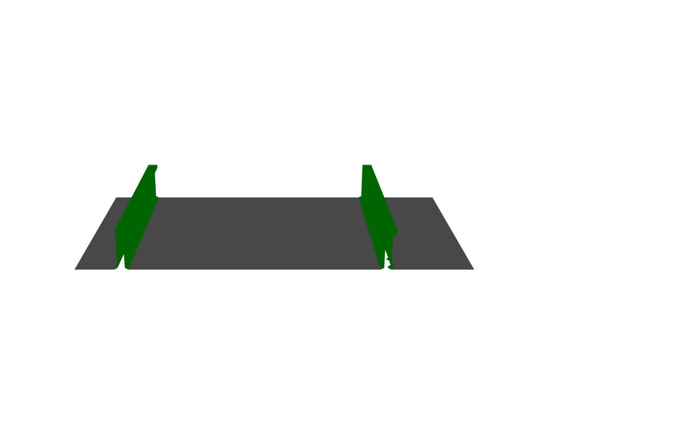
Classification of reinforcement surfaces
Each reinforcement is further classified into its main surfaces. The
bulb orientation is first determined with sideBulb(). Face
normals and their angles relative to the X and Z axes are then used to
identify the flat face of the reinforcement and the upper flat face of
its bulb.
# Determine the bulb orientation of each reinforcement
# TRUE = left, FALSE = right
bulbSide <- sapply(reinforcementMesh, sideBulb)
bulbSide
## [1] FALSE FALSE
# Angular tolerance for the flat faces
tolAngleZFlat <- 60
reinforcementFlatMesh <- vector("list", nReinforcements)
bulbUpperMesh <- vector("list", nReinforcements)
for (i in seq_len(nReinforcements)) {
# Compute face normals and barycentres
normals <- vcgFaceNormals(reinforcementMesh[[i]])
bary <- vcgBary(reinforcementMesh[[i]])
# Compute angles relative to the X and Z axes
angleX <- angleAxis(v = normals, dim = 1, negative = TRUE)
angleZ <- angleAxis(v = normals, dim = 3)
# Identify the flat face according to the bulb orientation
if (bulbSide[i]) {
isFlatFace <- angleX >= (180 - tolAngleX)
} else {
isFlatFace <- angleX < tolAngleX
}
isFlatFace <- isFlatFace & angleZ >= tolAngleZFlat
# Create the candidate flat-face mesh
candidateFlatMesh <- reinforcementMesh[[i]]
candidateFlatMesh$it <- candidateFlatMesh$it[, isFlatFace]
# Identify connected components
components <- splitTrianglesInd(mesh = candidateFlatMesh)
# Remove small disconnected components
filtered <- filterMeshComponents(mesh = candidateFlatMesh, comps = components,
minSize = 2000)
# Store the flat face of the reinforcement
reinforcementFlatMesh[[i]] <- filtered$mesh
# Determine the upper Z region of the reinforcement
zLimit <- quantile(bary[, 3], probs = 0.8)
# Identify the upper flat face of the bulb
isBulbUpperFace <- angleZ <= tolAngleZ & bary[, 3] >= (zLimit + 5)
## Create the upper flat face of the bulb mesh
bulbUpperMesh[[i]] <- reinforcementMesh[[i]]
bulbUpperMesh[[i]]$it <- bulbUpperMesh[[i]]$it[ , isBulbUpperFace]
}The resulting meshes identify two relevant surfaces of each
reinforcement: the flat face of the reinforcement and the upper flat
face of its bulb. The bulb orientation determined by
sideBulb() is used to select the appropriate flat face of
each reinforcement.
The classified surfaces of all reinforcements are represented together below.
# Represent the classified reinforcement surfaces
# Use `open3d()` or `new3d()` to open a new device
for (i in seq_len(nReinforcements)) {
shade3d(reinforcementFlatMesh[[i]], col = "darkgreen", lit = FALSE)
shade3d(bulbUpperMesh[[i]], col = "red", lit = FALSE)
}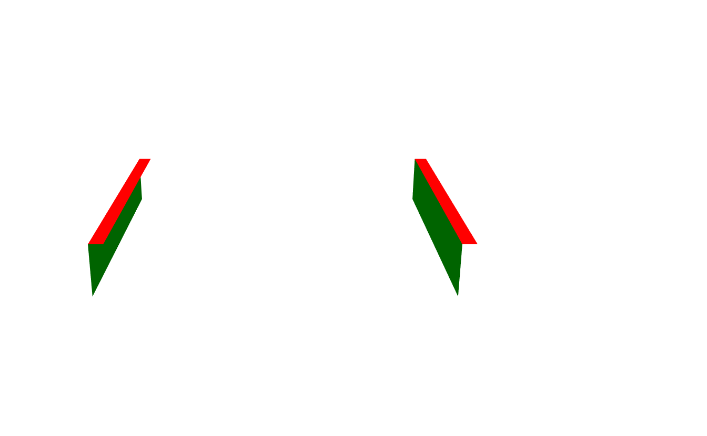
Extraction of the object base boundary
The boundary of the object base provides geometric information for subsequent dimensional analysis. In this section, the boundary is identified, cleaned, and ordered to facilitate the identification of its corners and the segmentation of the contour into its four sides.
Extraction of the original boundary
The original boundary of baseMesh is identified using
getBoundarySegments(). In this example, setting
returnMesh = FALSE returns a matrix containing the vertex
indices defining each boundary edge. These edges include those
associated with the intersections between the base and the
reinforcements.
# Extract the original boundary vertex indices
iBoundary <- getBoundarySegments(mesh = baseMesh, returnMesh = FALSE, simplify = FALSE)The original boundary is represented below by connecting the
corresponding pairs of vertices in baseMesh.
# Represent the original boundary
shade3d(baseMesh, col = "lightgray", alpha = 0.4)
shade3d(mesh3d(vertices = baseMesh$vb, segments = iBoundary), col = "red")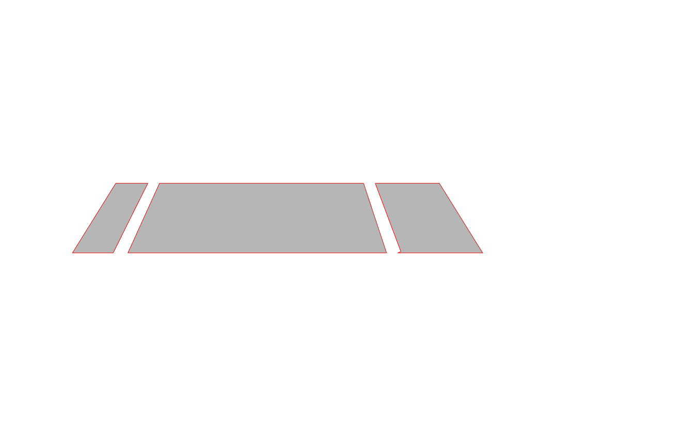
Cleaning and ordering the boundary
Before cleaning the boundary, the vertices shared by the base and
each reinforcement are identified from their triangle indices in the
reconstructed mesh. These intersection vertices are then provided to
cleanBoundarySegments(), which removes segments associated
with the reinforcements, eliminates internal noise and irregular
connections, and reconnects the resulting gaps to obtain a clean, closed
boundary.
# Identify vertex indices shared by the base and each reinforcement
baseReinforcementIntersection <- vector("list", nReinforcements)
for (i in seq_len(nReinforcements)) {
baseReinforcementIntersection[[i]] <- intersect(
mesh$it[, baseInd], mesh$it[, reinforcementInd[[i]]])
}
# Clean and reconnect the boundary segments
iBoundary <- cleanBoundarySegments(iBorder = iBoundary, baseMesh = baseMesh,
intersection = baseReinforcementIntersection)The cleaned boundary is represented below.
# Represent the cleaned boundary
shade3d(baseMesh, col = "lightgray", alpha = 0.4)
shade3d(mesh3d(vertices = baseMesh$vb, segments = iBoundary), col = "red")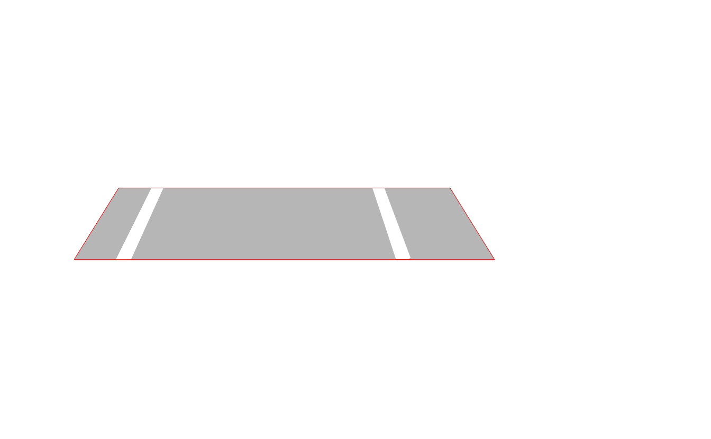
The cleaned boundary edges are subsequently ordered using
sortSegments(), which arranges them into a continuous
sequence according to their connectivity. This ordering facilitates the
identification of the base corners and the segmentation of the contour
into its four sides.
# Order the cleaned boundary edges
iBoundary <- sortSegments(edges = iBoundary)Identification of the base corners
In this example, the base is approximately rectangular and aligned
with the X and Y axes. The four corners are identified using the
detectCorners() function from dimControl.
This function computes the convex hull of the boundary vertices and defines four reference corners using the minimum and maximum X and Y coordinates. The closest convex hull vertex to each reference corner is then selected using Euclidean distance. The resulting corners are labelled A (bottom-left), B (bottom-right), C (top-right), and D (top-left).
# Extract the ordered boundary vertex indices
iBoundaryVertices <- iBoundary[1, ]
# Extract the XY coordinates of the boundary vertices
boundaryXY <- t(baseMesh$vb[1:2, iBoundaryVertices])
# Identify the four corners
iCorner <- detectCorners(boundaryXY)
# Extract the corresponding mesh vertex indices
iCornerVertices <- iBoundaryVertices[iCorner]The vector iCorner contains the indices of the four
identified corners in the ordered boundary sequence, whereas
iCornerVertices contains their corresponding vertex indices
in baseMesh.
The identified corners are represented below on the cleaned and ordered boundary.
# Represent the cleaned and ordered boundary with the identified corners
shade3d(baseMesh, col = "lightgray", alpha = 0.4)
shade3d(mesh3d(vertices = baseMesh$vb, segments = iBoundary), col = "red")
points3d(t(baseMesh$vb[1:3, iCornerVertices]), size = 8)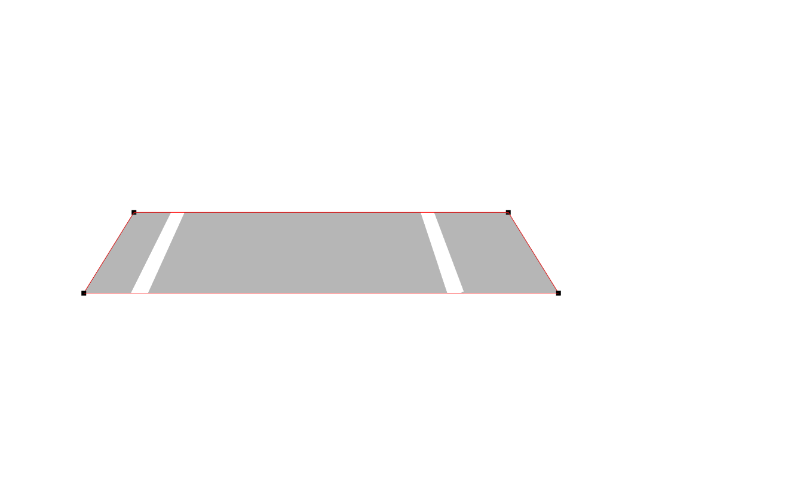
Segmentation of the base boundary
Once the corners have been identified, their indices in the ordered boundary sequence are used to divide the contour into its four sides. Each side consists of consecutive boundary edges between two adjacent corners, including the side connecting the last corner to the first.
# Order the corner positions without modifying their labels
iCornerOrdered <- sort(iCorner)
n <- ncol(iBoundary)
# Identify the boundary edge indices for each side
sideLimits <- list(
iCornerOrdered[1]:(iCornerOrdered[2] - 1),
iCornerOrdered[2]:(iCornerOrdered[3] - 1),
iCornerOrdered[3]:(iCornerOrdered[4] - 1),
c(iCornerOrdered[4]:n, seq_len(iCornerOrdered[1] - 1))
)
# Extract the vertex indices defining the edges of each side
boundarySides <- lapply(sideLimits, function(ind) iBoundary[, ind])The four sides of the base boundary are represented below in different colors.
# Represent the four sides of the base boundary
shade3d(baseMesh, col = "lightgray", alpha = 0.4)
color <- c("red", "blue", "green", "orange")
for (i in seq_len(4)) {
shade3d(mesh3d(vertices = baseMesh$vb, segments = boundarySides[[i]]),
col = color[i], lwd = 4)
}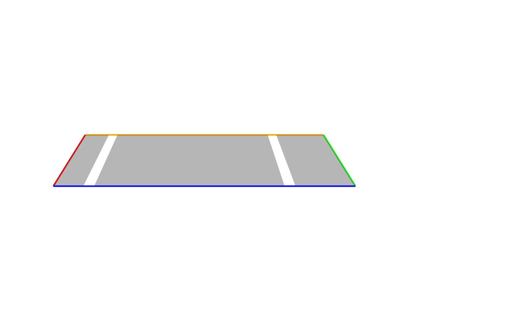
Dimensional inspection results
The reconstructed mesh can be used to evaluate the dimensions of the base against the reference CAD model. In this example, the nominal CAD dimensions are known, and all coordinates and lengths are expressed in millimetres (mm).
Corner coordinate comparison
The coordinates of the four identified corners are compared with their nominal positions in the CAD model. The differences are calculated as the reconstructed mesh coordinates minus the CAD coordinates.
# Extract mesh corner coordinates
coord <- baseMesh$vb[1:3, iCornerVertices]
rownames(coord) <- c("X", "Y", "Z")
colnames(coord) <- names(iCorner)
# Define nominal CAD coordinates
cornerCAD <- rbind(
X = c(A = 0, B = 900, C = 900, D = 0),
Y = c(A = 0, B = 0, C = 500, D = 500),
Z = c(A = 0, B = 0, C = 0, D = 0)
)
# Compare CAD and mesh coordinates
cornerTable <- data.frame(
Corner = colnames(coord),
X_CAD = cornerCAD["X", ],
Y_CAD = cornerCAD["Y", ],
Z_CAD = cornerCAD["Z", ],
X_Mesh = coord["X", ],
Y_Mesh = coord["Y", ],
Z_Mesh = coord["Z", ],
DX = coord["X", ] - cornerCAD["X", ],
DY = coord["Y", ] - cornerCAD["Y", ],
DZ = coord["Z", ] - cornerCAD["Z", ],
row.names = NULL
)
knitr::kable(cornerTable, digits = 3, caption = "Comparison of CAD and mesh corner coordinates (mm).")| Corner | X_CAD | Y_CAD | Z_CAD | X_Mesh | Y_Mesh | Z_Mesh | DX | DY | DZ |
|---|---|---|---|---|---|---|---|---|---|
| A | 0 | 0 | 0 | -0.346 | -0.476 | 3.708 | -0.346 | -0.476 | 3.708 |
| B | 900 | 0 | 0 | 900.301 | -0.476 | 3.708 | 0.301 | -0.476 | 3.708 |
| C | 900 | 500 | 0 | 900.301 | 500.323 | 3.708 | 0.301 | 0.323 | 3.708 |
| D | 0 | 500 | 0 | -0.346 | 500.323 | 3.708 | -0.346 | 0.323 | 3.708 |
The reconstructed base is approximately 3.708 mm above the CAD plane (Z = 0). This difference may be caused by the reconstruction process. The mesh has not been shifted or aligned with the CAD model.
# Corner deviations
cornerDeviations <- cornerTable[, c("Corner", "DX", "DY", "DZ")]
# Plot corner coordinate deviations
ggplot2::ggplot(
tidyr::pivot_longer(cornerDeviations, DX:DZ),
ggplot2::aes(x = Corner, y = value, fill = name)
) +
ggplot2::geom_col(position = "dodge") +
ggplot2::geom_hline(yintercept = 0) +
ggplot2::scale_fill_manual(values = c("steelblue", "orange", "seagreen")) +
ggplot2::labs(
title = "Corner coordinate deviations",
x = "Corner",
y = "Deviation (mm)",
fill = "Coordinate"
) +
ggplot2::theme_minimal()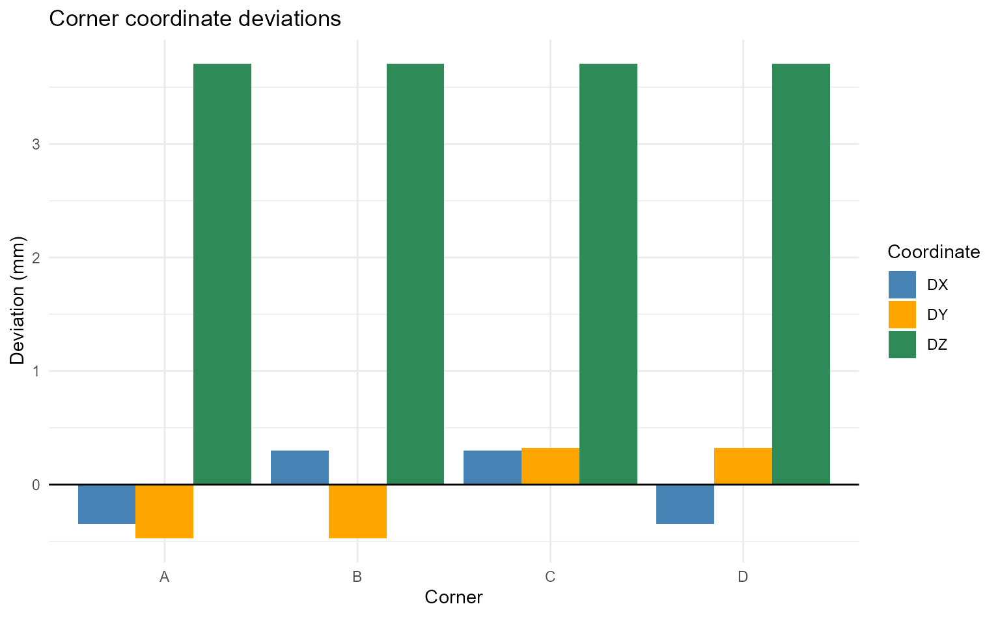
Base dimensions
The lengths of the four sides are calculated as the Euclidean
distances between adjacent corners using
euclideanDistance(). These lengths are compared with the
known nominal CAD dimensions.
# Calculate the side lengths
AB <- euclideanDistance(coord[, "B"] - coord[, "A"])
BC <- euclideanDistance(coord[, "C"] - coord[, "B"])
CD <- euclideanDistance(coord[, "D"] - coord[, "C"])
DA <- euclideanDistance(coord[, "A"] - coord[, "D"])
# Compare mesh and CAD dimensions
baseDimensions <- data.frame(
Side = c("AB", "BC", "CD", "DA"),
Mesh = c(AB, BC, CD, DA),
CAD = c(900, 500, 900, 500),
Difference = c(AB, BC, CD, DA) - c(900, 500, 900, 500)
)
knitr::kable(baseDimensions, digits = 3,
col.names = c("Side", "Mesh (mm)", "CAD (mm)", "Difference (mm)"),
caption = "Comparison of mesh and nominal CAD dimensions."
)| Side | Mesh (mm) | CAD (mm) | Difference (mm) |
|---|---|---|---|
| AB | 900.647 | 900 | 0.647 |
| BC | 500.800 | 500 | 0.800 |
| CD | 900.647 | 900 | 0.647 |
| DA | 500.800 | 500 | 0.800 |
Positive differences indicate dimensions larger than the nominal CAD values, whereas negative differences indicate smaller dimensions.
# Plot side length deviations
ggplot2::ggplot(baseDimensions,
ggplot2::aes(x = Side, y = Difference)) +
ggplot2::geom_col(fill = "steelblue", width = 0.6) +
ggplot2::geom_text(
ggplot2::aes(label = sprintf("%+.3f", Difference)),
vjust = -0.5
) +
ggplot2::labs(
title = "Side length deviations from the CAD model",
x = "Side",
y = "Length deviation (mm)"
) +
ggplot2::theme_minimal()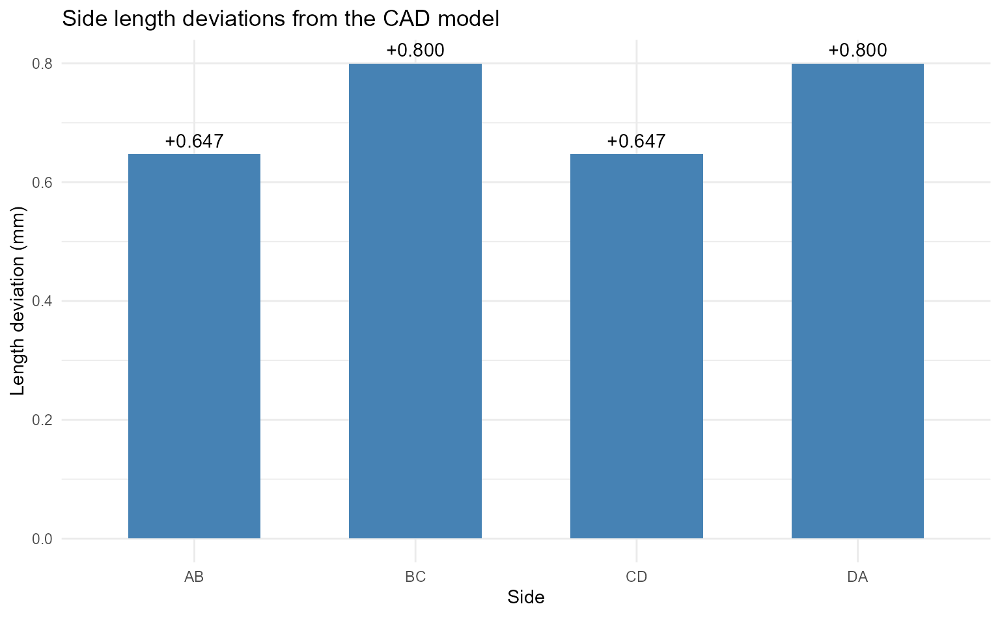
Further help
See the function reference pages for the full list of arguments and additional examples.